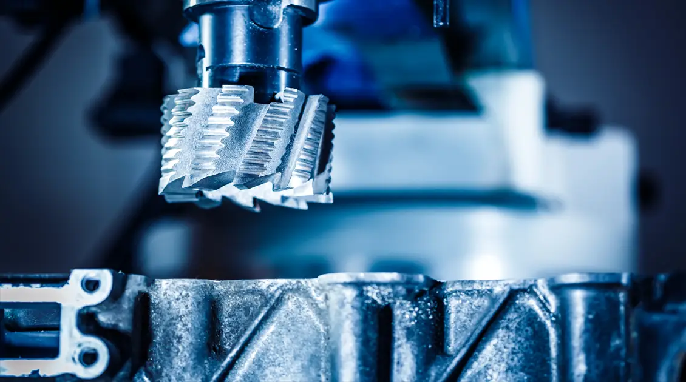

For MRO teams, supply reliability is built on three pillars: clear critical references, fit-for-purpose buying flows, and constant communication with operations.
1. Map what is critical
Separate line-stopping parts from substitutes and high-rotation consumables. Even a simple classification sharply improves planning and budget priorities.
2. Align purchasing with maintenance
Supplier lead times only create value when aligned with shutdown windows and logistics constraints. This avoids costly rush orders and reference mistakes.

3. Document and standardise
Drawings, nameplate photos, and validated equivalence history should be shared across sites. This improves response time and audit readiness.
In short, securing MRO in 2026 means clarifying priorities and synchronizing buying, stock, and production. For reference checks and realistic lead times, contact us.